La independencia
Se firma el Acta de Independencia de Centroamérica en Guatemala.
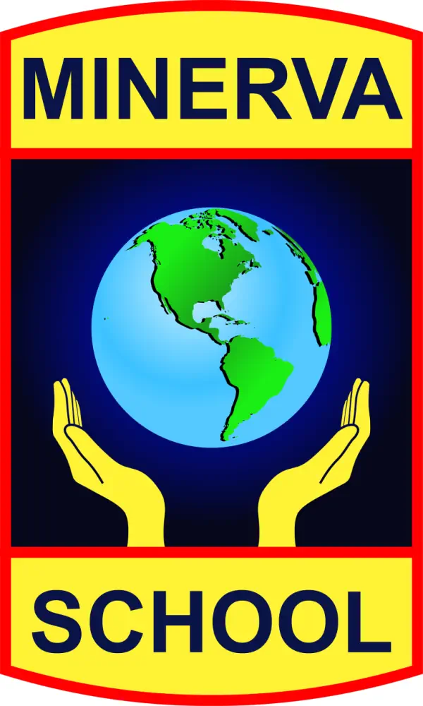
SEPTIEMBRE • MES DE LA PATRIA
205
Una experiencia para recordar nuestra historia, celebrar nuestras raíces y descubrir la riqueza que hace de Honduras un país único y Minerva School dice presente una vez más.
El 15 de septiembre de 1821, las provincias de Centroamérica proclamaron su independencia de la monarquía española. Ese momento abrió una nueva etapa histórica para los pueblos de la región.
Hoy, más de dos siglos después, septiembre es una oportunidad para mirar hacia atrás, reconocer a quienes construyeron nuestra historia y preguntarnos qué Honduras queremos construir juntos.
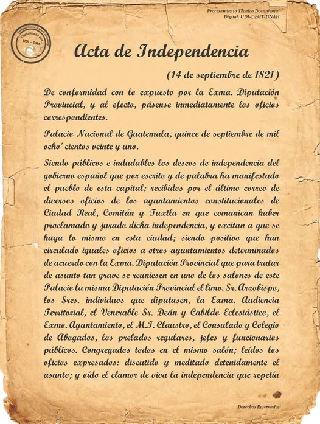
Una pequeña línea del tiempo para entender que la identidad también se construye con memoria.
Se firma el Acta de Independencia de Centroamérica en Guatemala.
La región adopta nuevas formas de organización política tras la independencia.
Honduras queda como Estado independiente dentro del proceso de disolución de la Federación Centroamericana.
La identidad nacional vive en nuestras aulas, nuestras comunidades, nuestra cultura y nuestros sueños.
PERSONAJES
Personajes fundamentales de nuestra historia. Haz clic para descubrir una breve reseña.
Una patria se honra no solo recordando su pasado, sino cuidando su presente y construyendo su futuro.
HONDURAS · 205IDENTIDAD NATURAL
Honduras posee una riqueza natural que también forma parte de nuestra identidad nacional.
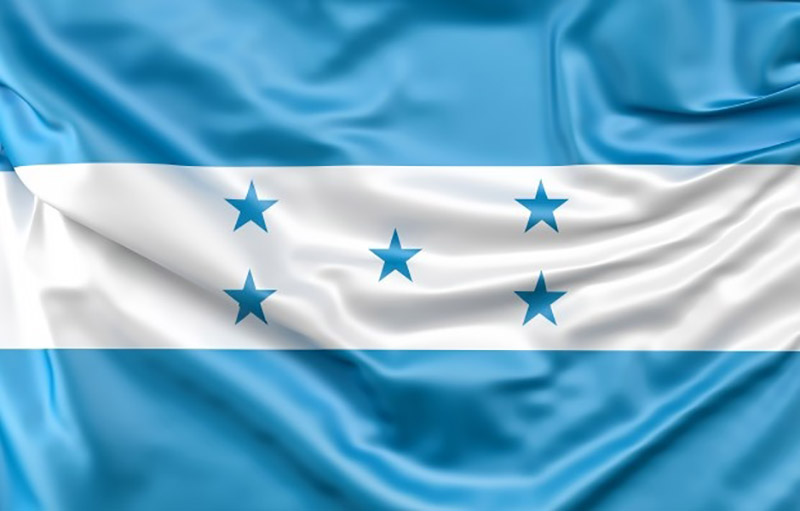
.jpg)
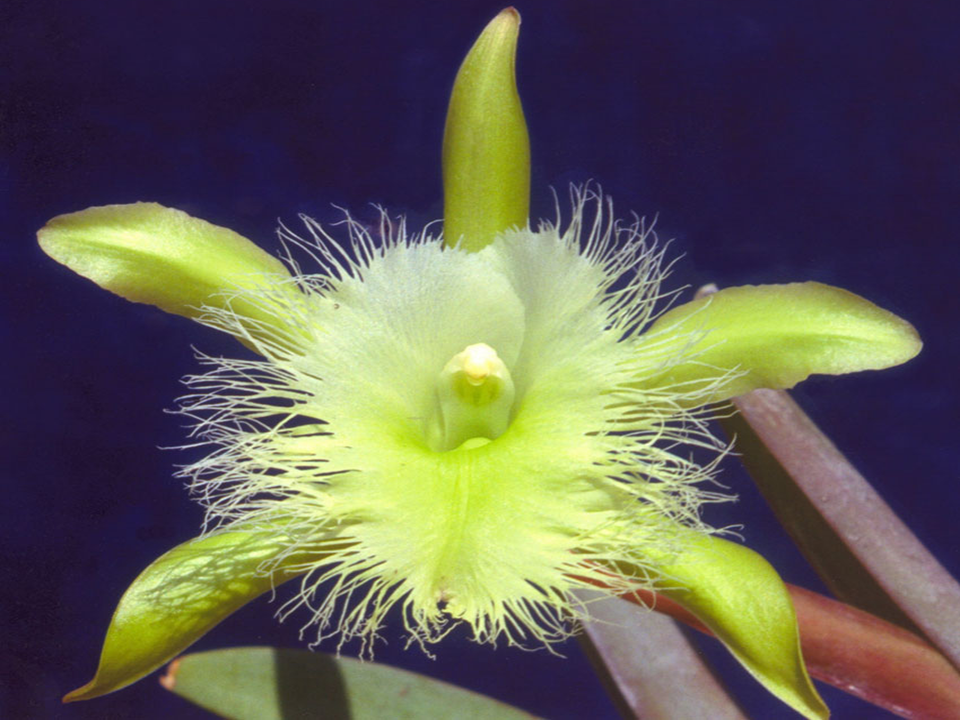
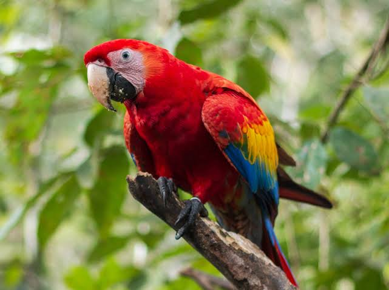
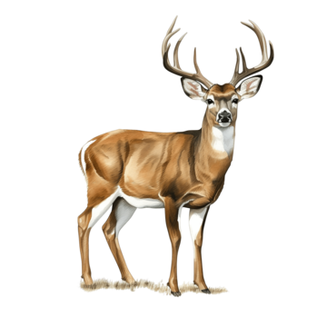
DESTINOS
De las montañas de Lempira a la grandeza de Copán: nuestro patrimonio está vivo.
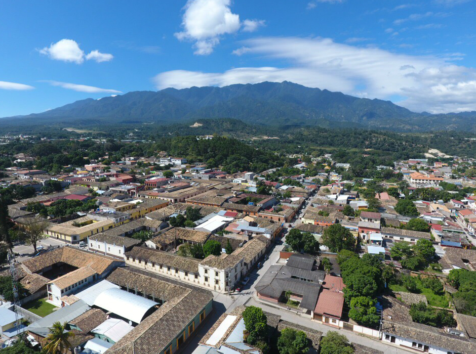
Un punto ideal para mostrar arquitectura, calles históricas, tradiciones y paisajes de la región occidental de Honduras.
→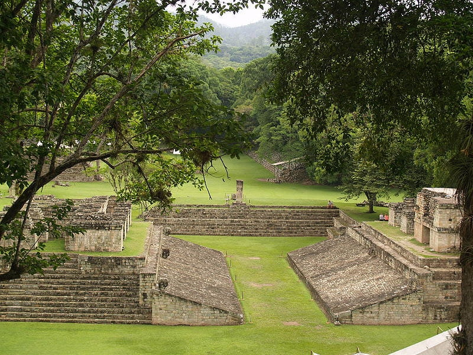
Uno de los grandes centros de la civilización maya y Patrimonio Mundial de la UNESCO desde 1980.
Conocer más ↗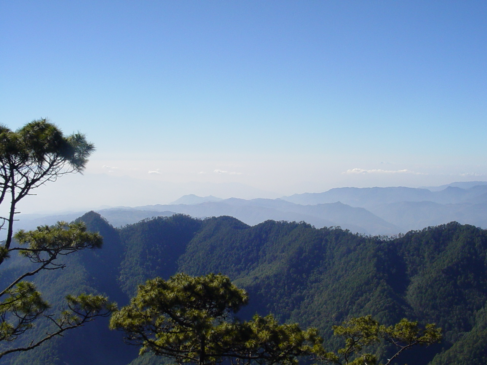
Un espacio para hablar de bosques, biodiversidad, senderismo y el orgullo natural de Lempira.
→RAÍCES
Honduras es un encuentro de pueblos, lenguas, música, gastronomía, artes, tradiciones y memorias.
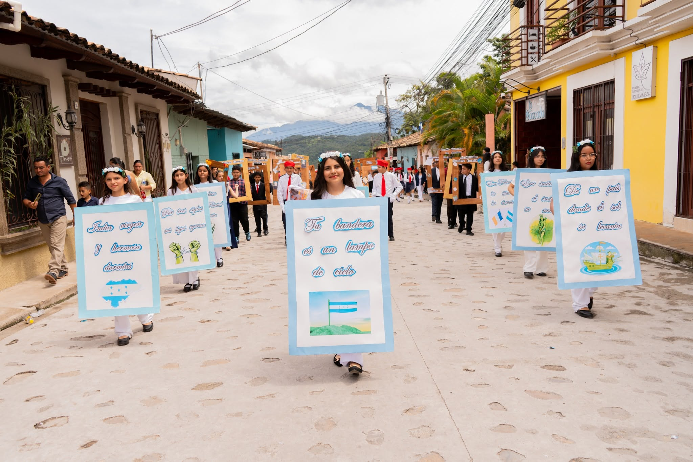
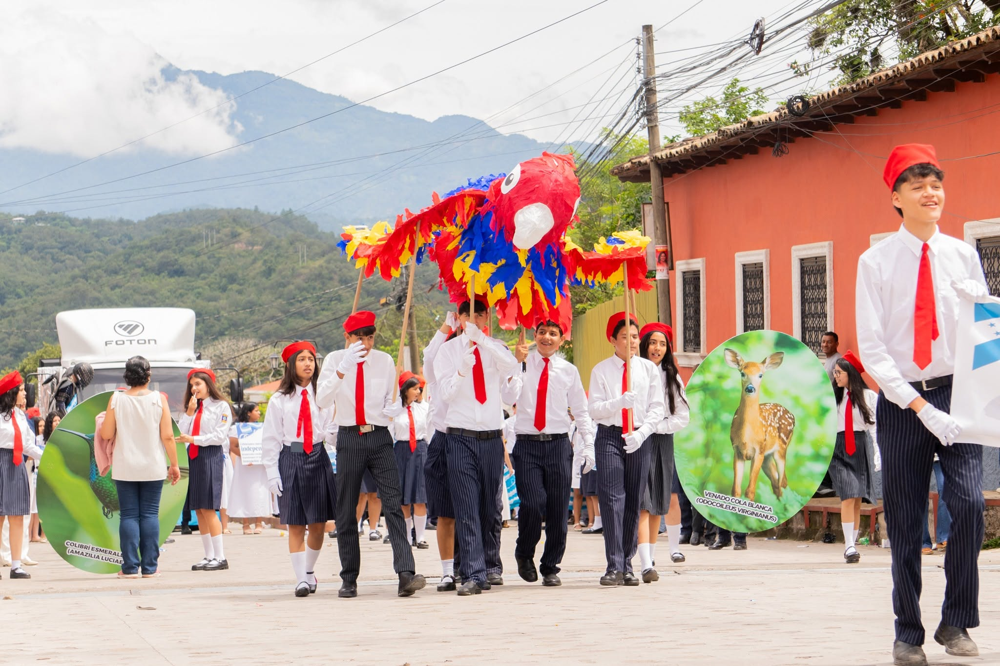
NUESTRO FUTURO
El orgullo nacional también está en aprender, cuidar, crear, investigar, emprender y servir a los demás.
NUESTRA COMUNIDAD
Minerva School es un colegio bilingüe fundado en 2005 por la Dra. Sandra Hércules, con más de 600 estudiantes desde preescolar hasta undécimo grado. Formamos jóvenes con excelencia académica y valores cristianos, capaces de influir y transformar la sociedad en la que viven, en un marco de libertad, respeto y responsabilidad.
Desfile de Independencia · 15 de septiembre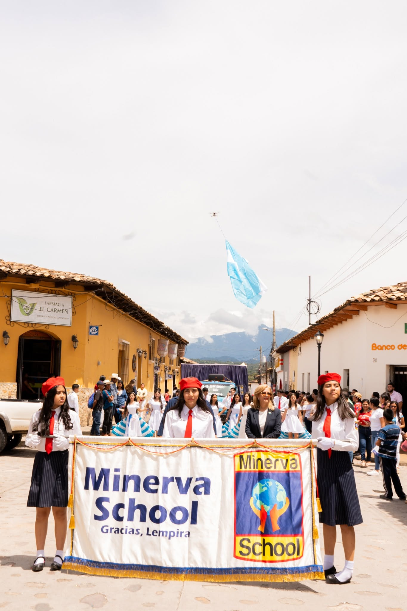